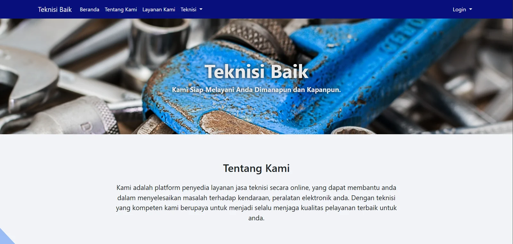

Pemrograman
HTML5CSS3JavaScriptPythonGolangMySQL
Available for Web Projects
Saya membangun website responsif dengan kombinasi logika pemrograman, database, dan desain antarmuka modern yang berpusat pada pengguna.

Profil Profesional
Lulusan Sarjana Informatika dari Universitas Gunadarma dengan spesialisasi pengembangan web dan desain antarmuka pengguna. Saya memiliki landasan kuat dalam logika pemrograman, estetika desain, dan pengalaman membangun aplikasi web responsif menggunakan teknologi modern.
Tech Stack & Design Stack
Front-end Development — tampilan interaktif dan dinamis.
User Research — solusi desain sesuai kebutuhan pengguna.
Modern Coding — eksplorasi framework dan workflow baru.
Featured Project
Website ini menampilkan landing page, sistem login/registrasi, order perbaikan, dashboard teknisi, manajemen tipe perbaikan, dan status penanganan order.
teknisibaik.local

Full-stack Web Application
Aplikasi layanan perbaikan untuk mempertemukan pelanggan dengan teknisi. Alurnya mencakup pemilihan layanan, pengisian form order, dashboard teknisi, pengambilan order, pembatalan, penyelesaian, dan CRUD tipe perbaikan.
Preview interaktif dari halaman penting aplikasi: landing page, pemilihan layanan, form order, dashboard, CRUD, dan detail order.
Halaman pengenalan layanan dengan navbar, hero image, tentang kami, dan galeri layanan.
Pelanggan memilih jenis layanan dan mengisi form permintaan perbaikan secara terstruktur.
Teknisi dapat melihat order masuk, mengambil order, menyelesaikan, atau membatalkan order.
Admin/teknisi mengelola tipe perbaikan, harga, ikon layanan, dan daftar item yang tersedia.
Education & Certification
Universitas Gunadarma, Fakultas Teknik Industri. Fokus studi: pengembangan perangkat lunak, struktur data, dan desain sistem.
Kursus Universitas Gunadarma tentang alur desain aplikasi web, UX, purwarupa, fungsionalitas, dan estetika visual modern.
Sertifikasi kompetensi dalam membangun aplikasi web dengan HTML, CSS, MySQL, dan fitur CRUD fungsional.
Let's Connect
Hubungi saya untuk diskusi proyek web, UI/UX, atau pengembangan aplikasi berbasis database.